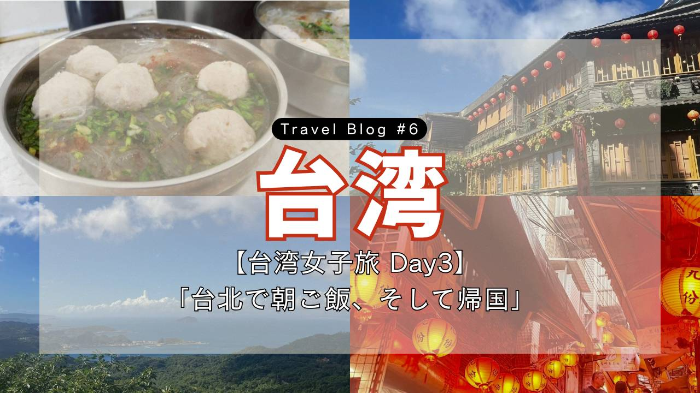
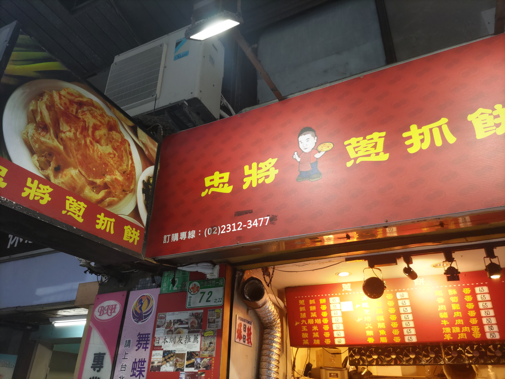
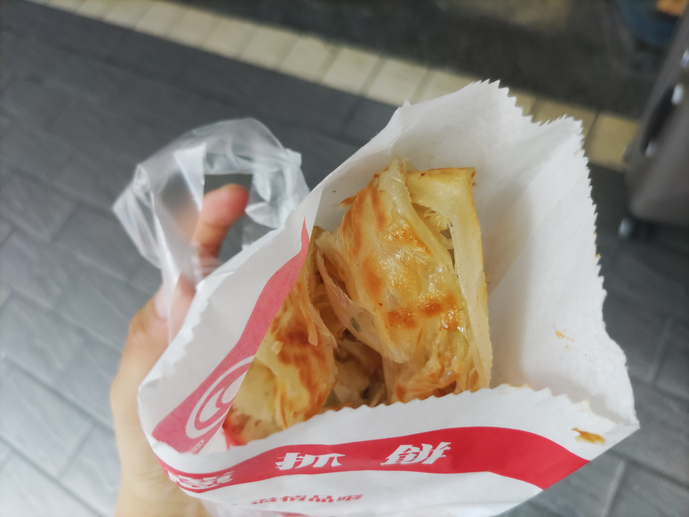
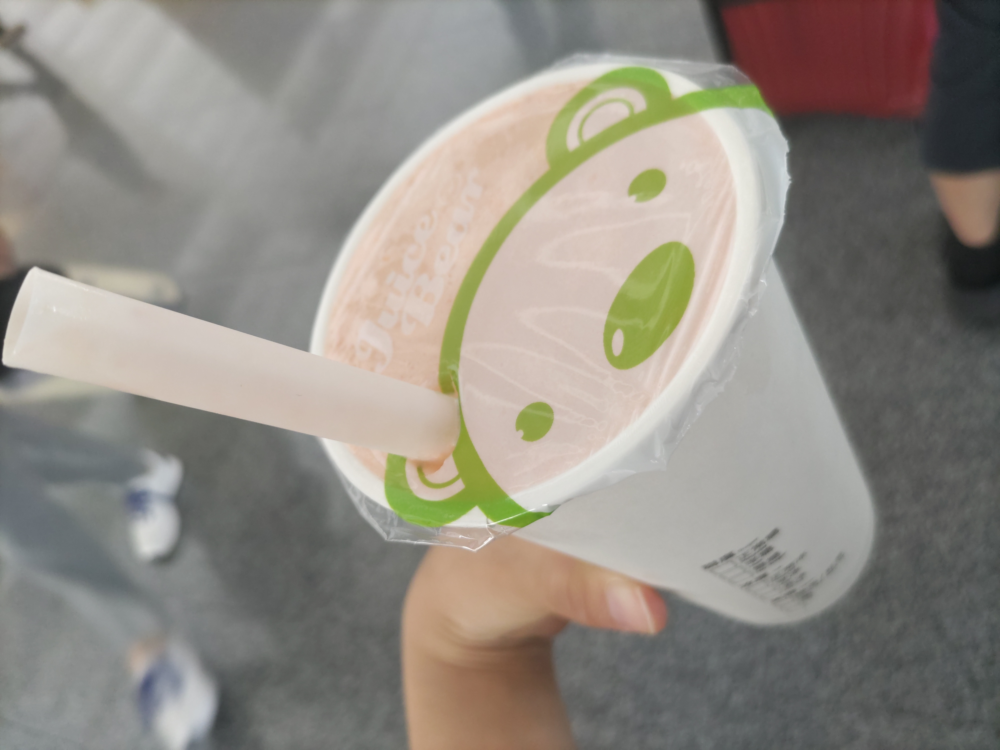
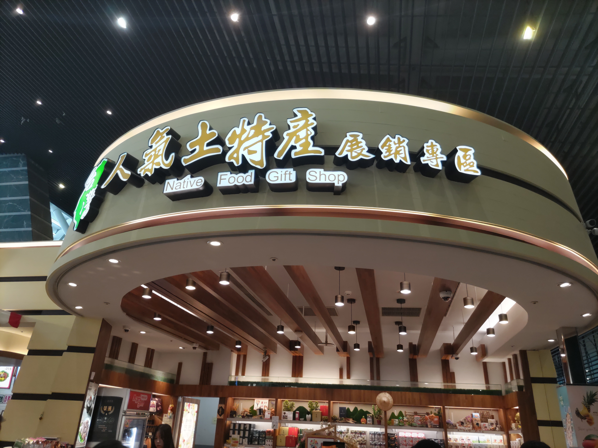

【台湾女子旅 Day3】
「台北で朝ご飯、そして帰国」

Trip Info
Place 台湾
Date 2025.09.28〜30
Transport 飛行機・電車・バス
皆様こんにちは。ミナです。
今回は大学の友達との台湾旅行三日目のノートです。
台湾旅行最終日ですが、帰国のギリギリまで満喫できました！
※このノートでは、［1元＝4.9円］で計算しています。
この日はついに最終日！
もっと早く起きようと思っていたのですが、早起き失敗です笑。
気を取り直して、まずは朝ご飯を食べに行きます。

台北駅からすぐ近くのこのお店にやってきました。
朝早くからやっているお店なので、朝ご飯に選びました！

「蔥抓餅」〈220円〉です！
蔥抓餅は台湾のB級グルメです。
パリパリのクレープ生地で、香ばしい葱が香ります。
この料理、私が台湾で食べた物の中で一番美味しいと思いました。
日本人全員好きな味だと思います！
食べながら台北駅に向かいます。
台北駅から空港まで、おなじみの爆睡をかましました。
帰国の手続きをして、あとはお土産を探すのみです！

友達がお店を見ている間、昨日の夜市にもあって、ずっと気になっていた「パパイヤミルク」を飲んでみることに。〈465円〉
なんだか知っている味だなと思って考えてみたのですが、カスタードの味に近い気がします。
フルーツミルクなのにカスタードの味になるのが不思議です。

台湾土産といえば「パイナップルケーキ」！
ということで、私はこちらの店でケーキを購入。
その周りにもお土産屋さんがいくつかあったので、色々と見て回りました。
最終日で時間もなかったのですが、最後までしっかり楽しみました！
今回の旅記録は以上です。
ここまでご覧いただきありがとうございます。
次回のブログも是非見てください♪
ではまた！